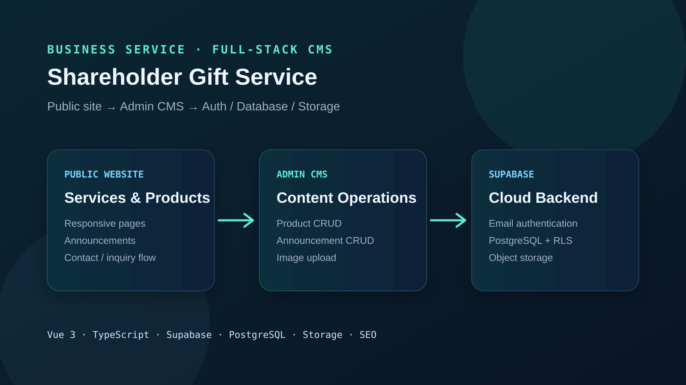

01 / 網站和後台
網站除了讓訪客看資訊，也需要讓管理者方便更新內容。
2主要內容管理流程：公告與商品
3Supabase 能力：Auth、Database、Storage
9README 記載的 Schema.org 結構化資料類型
CI/CD以 GitHub Actions 管理部署流程
02 / 網站怎麼運作
前台和後台的資料都放在 Supabase。
Vue 3 UI服務、方案、商品、公告與聯絡流程
Admin CMS登入後新增、編輯、刪除與上下架內容
SupabaseEmail Auth、PostgreSQL 與 Row Level Security
Storage商品圖片與內容資產的雲端儲存

03 / 訪客看到的部分
04 / 管理者怎麼更新
商品上架或公告更新，都可以在登入後操作。
- 管理者用 Supabase 的電子郵件和密碼登入。
- 可以新增、修改、刪除公告，並設定類型與標籤。
- 可以編輯商品、價格、分類，以及上架或下架。
- 圖片放在 Supabase Storage，商品與公告資料保存在 PostgreSQL。
- 資料庫用 Row Level Security 管理資料存取權限。
05 / 使用的工具
06 / 做完這個網站之後
網站上線後，商品和公告還是會持續變動。
所以我把管理後台和公開頁面一起做進去。網站不只是給訪客看的頁面，管理者也能自己維護日常內容。